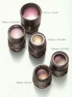

器材库 > 35mm画幅MF定焦镜头 > MD 135/2.8

详细规格
镜头类型
中远摄/远摄镜头
发布日期
未知
焦距
135mm
最大光圈
f/2.8
最小光圈
f/22
视角（对角）
18
镜头结构
5片/5组
最近对焦距离
150cm
滤镜口径
55mm
镜头卡口
Minolta MD/MC
防抖
否
颜色
黑色
尺寸
64 x 81mm
重量
385g
gotowf2014-07-17 16:424.08 分
操作性 4.50耐用性 3.50性价比 3.50解像力 4.00色彩还原 4.50机械结构 4.50
liuqing2272014-04-07 00:254.5 分
操作性 4.00耐用性 5.00性价比 5.00解像力 4.00色彩还原 4.50机械结构 4.50
自在飞2005-11-25 10:454.17 分
操作性 4.00耐用性 4.00性价比 4.00解像力 4.00色彩还原 4.00机械结构 5.00
gaoyuan2005-08-05 16:394.83 分
操作性 5.00耐用性 4.50性价比 4.50解像力 5.00色彩还原 5.00机械结构 5.00
jameswang2004-11-05 20:154.75 分
操作性 5.00耐用性 4.00性价比 5.00解像力 4.50色彩还原 5.00机械结构 5.00
benson02032004-07-05 14:094.33 分
操作性 4.50耐用性 3.50性价比 4.50解像力 4.50色彩还原 4.50机械结构 4.50
nf2a2003-12-18 10:425 分
操作性 5.00耐用性 5.00性价比 5.00解像力 5.00色彩还原 5.00机械结构 5.00
lhasacph2003-11-17 14:494.17 分
操作性 4.00耐用性 4.50性价比 4.00解像力 4.00色彩还原 4.00机械结构 4.50
helaoyao2003-01-24 15:144.83 分
操作性 5.00耐用性 4.50性价比 4.50解像力 5.00色彩还原 5.00机械结构 5.00
hmllx2003-01-13 09:374.67 分
操作性 4.50耐用性 4.50性价比 5.00解像力 4.50色彩还原 5.00机械结构 4.50
flap2002-04-13 21:165 分
操作性 5.00耐用性 5.00性价比 5.00解像力 5.00色彩还原 5.00机械结构 5.00
产品图 / 样片
美能达 MD 135/2.8
评测 / 相关文章
该产品暂无存档的评测文章